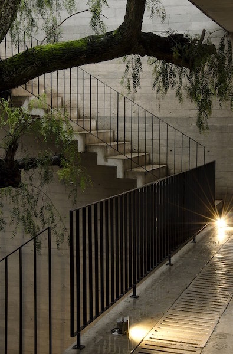
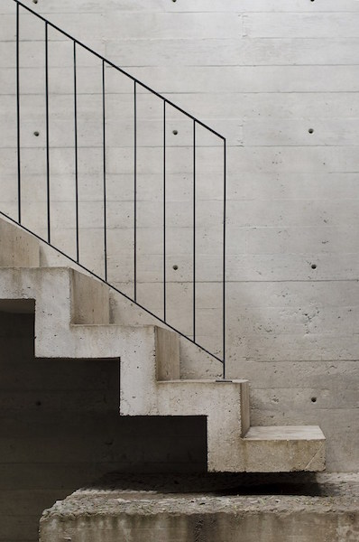
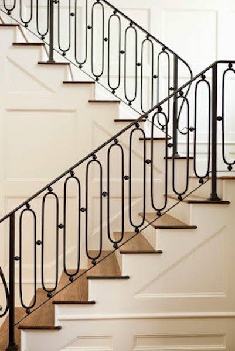
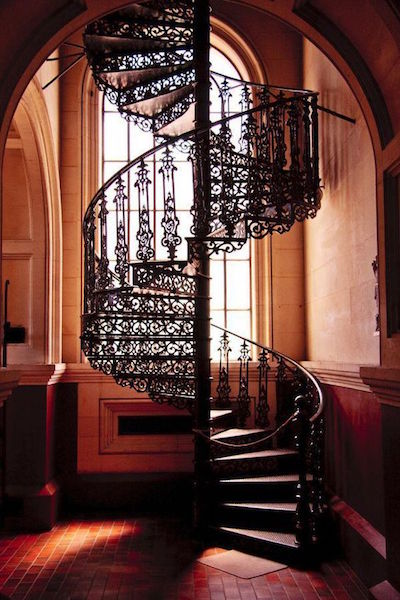

Balustrades
Elegant, stylish and retaining its timelessness beauty
SimplySteel can help you create individuality and style by mixing our manufacturing
expertise and your design skills – create your own wrought iron balustrade masterpiece!
SimplySteel have created many stunning wrought iron balustrades for indoor or outdoor
staircases. Whether you have a design ready to be created or you require our assistance
in designing the perfect balustrade, we can deliver a bespoke service, resulting in a
unique focal point for your home or business.
View our galleries of indoor and outdoor
balustrades that we have manufactured for our many satisfied customers and call us on
(04) 4720896 to discuss your requirements.

Outdoor Balustrade

Outdoor Balustrade

Outdoor Balustrade

Outdoor Balustrade